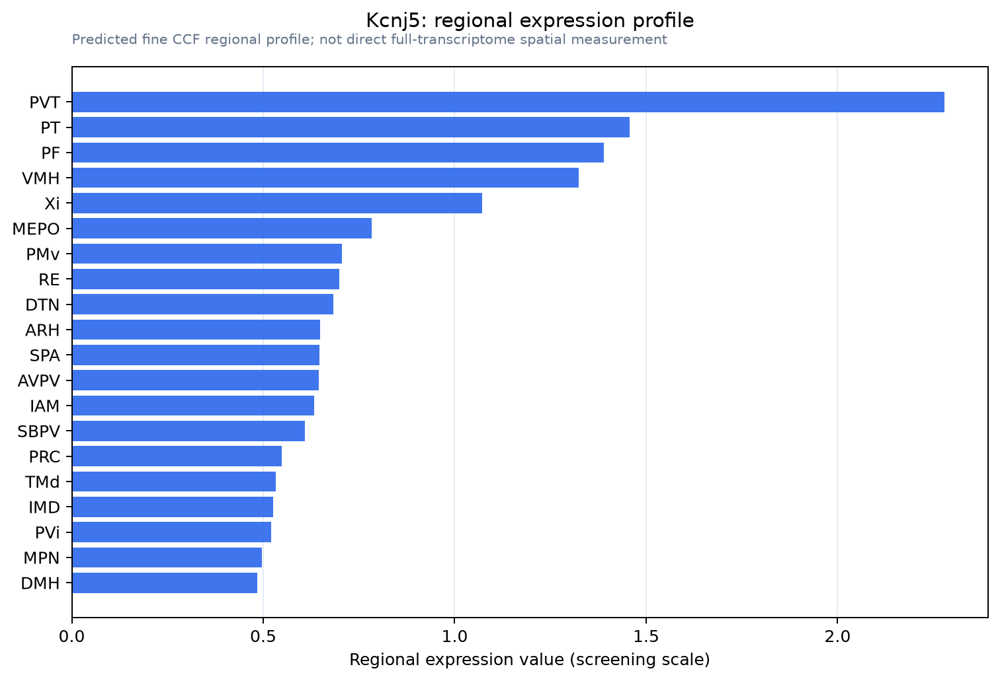

Kcnj5
G protein-activated inward rectifier potassium channel 4 (GIRK-4) (Cardiac inward rectifier) (CIR) (Heart KATP channel) (Inward rectifier K(+) channel Kir3.4) (KATP-1) (Potassium channel, inwardly rec
Spatial tier: RESTRICTED · Class: ION_CHANNEL · Top region: PVT (Paraventricular nucleus of the thalamus) · Positive regions: 14/554
45.0Discovery Score
40.4Targetability Score
CEvidence grade C
What this means: Kcnj5: fine CCF profile is restricted toward PVT (top regions: PVT, PT, PF, VMH, Xi; 14 positive regions); direct spatial validation is still required.
Direct spatial evidence
MERFISH REGION LOCATOR

Regional expression figure

Predicted WMB × fine-CCF profile; not direct full-transcriptome spatial measurement.
Spatial profile
Evidence and specificity
- Evidence status
- PREDICTED_FINE
- Direct sources
- None; predicted localization only
- Exclusive threshold
- 12 positive regions out of 554
- Spatial specificity
- 0.314
- Top-region fraction
- 0.078
- Filter status
- PASS
Interpretation limits
- Cell-type-to-region projection is imputed expression, not direct spatial measurement.
- Adult reference atlases do not establish stability across age, sex, strain, state, or disease.
- Transcript abundance does not guarantee protein abundance or genetic-tool performance.